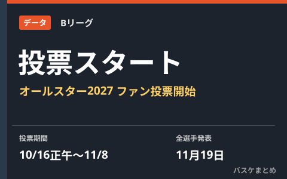

Bリーグオールスター2027、ファン投票スタート 11月19日に全出場選手発表

「りそなグループ B.LEAGUE ALL-STAR GAME WEEKEND 2027 IN AICHI-NAGOYA」で行われるオールスターゲームのスターティング5を決めるファン投票が、10月16日正午にスタートしました。投票期間は11月8日23時59分まで。10月27日に中間発表、11月19日には全出場選手が発表される予定です。
投票期間と発表日程
ファン投票は10月16日（金）正午に開始され、11月8日（日）23時59分に締め切られます。その間の10月27日（火）に中間発表が行われ、投票終了後の11月19日（木）に全出場選手が発表される日程です。投票は公式WEB、B.LEAGUE CARD、バスケットLIVEの3つの方法で行うことができ、バスケットLIVEからの投票はアプリ限定で3票分として数えられます。
| 日程 | 内容 |
|---|---|
| 10月16日（金）正午 | ファン投票開始 |
| 10月27日（火） | 中間発表 |
| 11月8日（日）23:59 | ファン投票終了 |
| 11月19日（木） | 全出場選手発表 |
各チーム13名、5名はファン投票・8名はリーグ推薦
オールスターゲーム「B.BLACK」対「B.WHITE」には各チーム13名が選出されます。このうちファン投票で選ばれるのはスターティング5の5名で、残る8名はB.LEAGUEの推薦で決まります。推薦ではポジションのバランスやファン投票の結果、シーズン前半の成績などが考慮されるとされています。
開催地は愛知・名古屋、関連企画も発表
今回のオールスターゲームウィークエンドは「IN AICHI-NAGOYA」として愛知・名古屋で開催されます。これまでに発表された関連企画では、Wリーグ選手が参加するコンテストや、マスコットによる運動会企画の初開催などが予定されていると報じられています。
Q. 投票できる選手の範囲は？
A. 具体的な投票対象選手の一覧やポジション別の候補は、B.LEAGUEオールスター特設サイトで確認できます。本記事執筆時点では投票開始の告知が中心で、候補者一覧の詳細までは確認できていません。
出典：バスケットボールキング「Bリーグオールスターのファン投票開始…27日に中間発表、11月19日に全選手発表へ」／B.LEAGUE公式「りそなグループ B.LEAGUE ALL-STAR GAME WEEKEND 2027 IN AICHI-NAGOYA」概要発表のお知らせほか
https://basketballking.jp/news/japan/20261016/637943.html
https://www.bleague.jp/news_detail/id=624996
https://www.bleague.jp/en/all-stargame2027/about-vote/